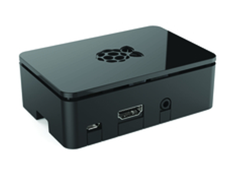
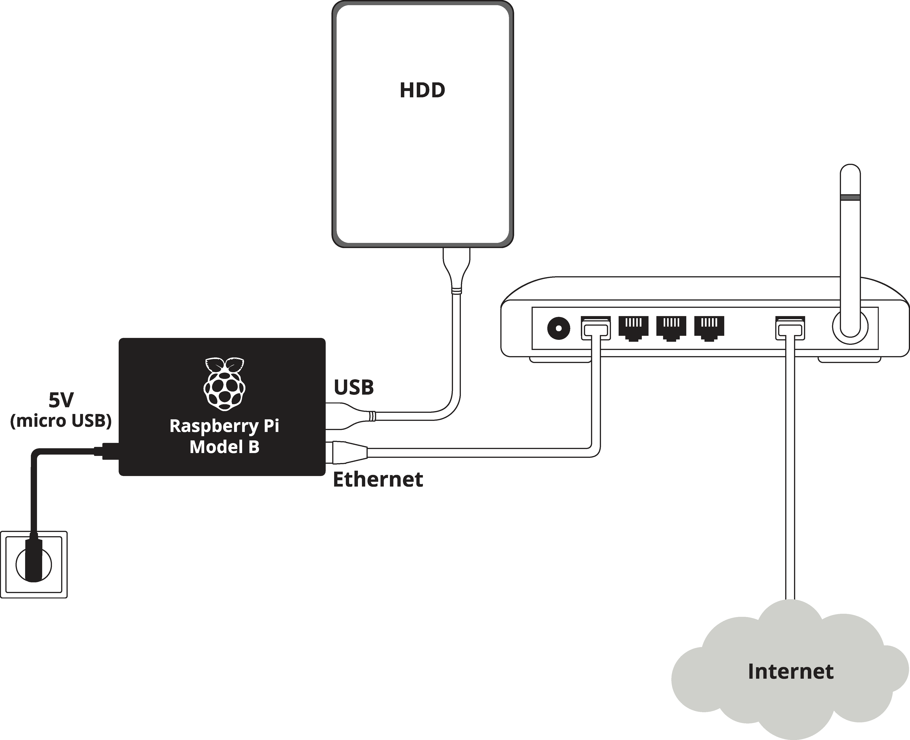

1. Get Hardware
Syncloud device is a small box with low power consumption. Standard device is built on Raspberry Pi 2 Model B.
2. Connect Everything
Connect your device to your home router. Use one of the available LAN ports. Plug in power wire and turn the device on.
3. Activate
Create account at syncloud.it. Install Syncloud app on your smartphone and use it to find and activate your Syncloud device. Syncloud app is simple and intuitive, watch this demo video.


4. Use It!
Now you are ready to use your Syncloud device!
 Check your personal ownCloud server. Access. Sync. Share. Learn more about ownCloud features. Download ownCloud application for your desktop and smartphone. Check available clients here.
Check your personal ownCloud server. Access. Sync. Share. Learn more about ownCloud features. Download ownCloud application for your desktop and smartphone. Check available clients here.